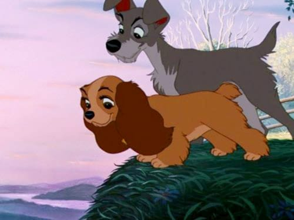

Hola, mi nombre es Francisco, naci el 20 de mayo de 1990, soy de Tauro, tengo 35 años, soy un apasionado por el aprendisaje, la naturaleza y los procesos. Como Tauro que soy, soy muy competitivo, territorial y muy comprometido en todo lo que me involucro y hago. Me encanta poder ayudar en lo que se pueda y me esfuerzo por destacar en cada acctividad que realizo. He tenido una vida no muy agradable y he sufrido desiluciones, las cuales me han llevado a adquirir distintos temores. Entre ellos, se encuentra la falta de valoracion propia, el bajo autoestima e inseguridades al hablar. Estoy contento porque he logrado mejorar en algunas cuestiones como por ejemplo la de ser impulsivo, ahora pienso todo un poco mas, observo y espero para poder dar algun paso. Esas limitaciones y sumado a verme solo para todo, son las causales por las cuales he desarrollado distintos proyectos pero no los he concretado, entre los cuales se encuentra la empresa de mantenimiento de casas. Tengo dos hijos hermosos, Francisco Benjamin es el mas grande y tiene 9, mientras que Noha Valentino es el mas pequeño y tiene 6. Ellos junto a mi madre (Liliana) son los motivos por los cuales no me he rendido nunca. Asi es, que hace como 3 años o mas que me encuentro solo, dedicandome a los nenes y al trabajo. Ahora que menciono el trabajo, es que me transporto al mes de julio del año pasado (2025) mes en el que te conoci. Debo admitir que soy muy observador y miro mucho a las personas, entre lo que al pasar para la parte de atras donde trabajas vos, he visto detenidamente a las personas que ahi se encuentran. Desde ese momento en que te tome declaracion dije para mi adentro, Laaa!!! Que hermosa!!! Pero solamente quedaria ahi adentro. Debo reconocer que no paraba de mirarte, aun asi cuando le tome declaracion a tus compañeras. Como te dije en otra oportunidad por el celu, cualquiera se ubiera perdido en mirar a las demas, pero esa no fue mi eleccion; no se ni como se llaman las otras y realmente no me interesa. Quien se deja llevar por algo visual se pierde de lo realmente especial que se puede encontrar en el camino. Asi fue, que tuve la necesidad de obtener un informe tuyo, necesitaba saber mas de vos. Cuado vi que eras parte de una sociedad e impulsado por las ganas de poder hablar con vos, es que te dije que me resltaba raro que alguien que forma parte de una sociedad este trabajando como empleada de comercio y no este trabajando justamente en ese negocio, con lo cual aproveche para romper el hielo y tratarte de turbia... En la busqueda de informacion tuya fue que di con lo del medidor de luz, tambien te avise lo de la deuda que tenias. Y asi fuimos hablando sobre las armas y algunas cosas que tal vez quedaron en el olvido. LLegado finales de agosto surgio lo del reconocimiento de los secuestros, momento en el cual aproveche y te conte por arriba del proyecto de la empresa de mantenimiento, frenanado las ganas de decirte que no queria que desaparezcas; pero termino eso y te fuiste, quedandome solamente la deuda de luz como excusa para poder escribirte. Luego me he comportado como un nene, el cual solamente queria hablar con vos y por eso te peleaba. Asi fue que llego el seis de enero, dia en el cual y gracias a fiscalia te tuve que volver a escribir y luego verte por la notificacion para que fueras a declarar. Una vez que redacte la misma y sin chequear los errores de ortografia, fue que te notifique y no se si lo recuerdes, pero entre lo contento que estaba por verte y quedarme como bobo mirandote pero disimulando fue que me despedi y aproveche para poder tocarte el brazo u hombro (no recuerdo con exactitud), simplemente fue algo que me surgio. Luego recuerdo que me trataste de usted al preguntarme si yo iba a estar el dia de tu declaracion; a lo que te respondi que no, y me dijiste que ensima que te metia ahi te dejaba sola... Debo reconocer que eso me dolio, porque aunque no lo pudiera decir ya sea porque no correspondia o por miedo, pero queria decirte que no te dejaria sola nunca por nada, pero ahi me quede callado nuevamente. Pero un Tauro nunca olvida. Fue muy lindo el que comenzaramos a charlar a diario. Me costo mucho el ir midiendo las palabras durante las charlas y asi lograr no meter la pata con nada. Quiero reconocerte y agradecerte el que me aceptes asi de intenso y que me hayas obligado en cierto modo a tener que empezar a decirte todo lo que mi cabeza queria gritar y mis dedos no escribian. Creo que merezco un pequeño premio por haberme aguantado las ganas de decirte muchos adjetivos calificativos. Jajaja. Aunque siendo sincero no encuentro la combinacion de ellos para poder elogiarte como mereces o de poder expresar la manera en que te veo. A lo largo de enero, son incontable las sensaciones que he tenido que soportar, desde el estar todo el dia esperando a que me respondieras, hasta sentirme muy acelerado por no poder creer el que sucediera de estar hablando con la persona que desperto nuevamente un deseo que crei que habia muerto. Alguna parte me debo estar salteando, pero aca estoy 22:38 horas del dia 02/02/26 escribiendo todo esto para poder responder a la pregunta que me tiraste... ¿Cual es mi espectativa para con vos? Aunque no crea que es el momento de decir todo esto (por temor a que te alejes) lo voy a tener que hacer porque vos me lo pedis. Quiero formar un equipo con vos, donde el primer paso sea encarar algun negocio, asi sea vender alfajores, pero poder realizarlo con vos. Quiero que eso sea para poder medirnos como te propuse en un momento y recuerdo que aceptaste. Ya que tengo que poner todas las cartas en la mesa, el segundo paso es invitarte a que caminemos juntos por la vida, apoyandonos en todo momento, siendo un equipo, una pareja. Como ya dije, tengo 35 y lo que me reste quiero poder dedicartelo a vos, por eso te pregunte si vivirias en otra ciudad o en otro pais. Con todas esas respuestas que fueron surgiendo, por dentro mio era como un carton de bingo que se iba completando y llego el momento de cantar BINGO. Por todo eso es que quiero que seas mi compañera de vida, y hacer todo lo que sea necesario para poder convertirme en el hombre que vos mereces y que con el tiempo podamos formar una familia y que los domingos comamos pastas con mucho queso! Como Corresponde!. Se que no tengo ni miras de ser algo parecido a perfecto, pero vos me dijiste e impulsaste a que uno tiene que ser como es, y aca estoy dispuesto a todo para poder hacerte feliz. Espero que puedas comprender todo lo que te he escrito, y si bien no es nada facil el poder expresar todo lo que se desarrollo en este tiempo porque es todo enorme y muy fuerte. Si bien soy lo mas parecido a Vagabundo, vos sos Reyna y asi quiero que andemos juntos para todos lados... No se si es correcto el que hoy te haya escrito todo esto, pero ahi tenes la respuesta a tu pregunta. Me faltan muchas cosas por describir y deseo que me gustaria que realicemos, pero esto seria eterno, asi que para resumir un poco... Simplemente quiero TODO!!!
